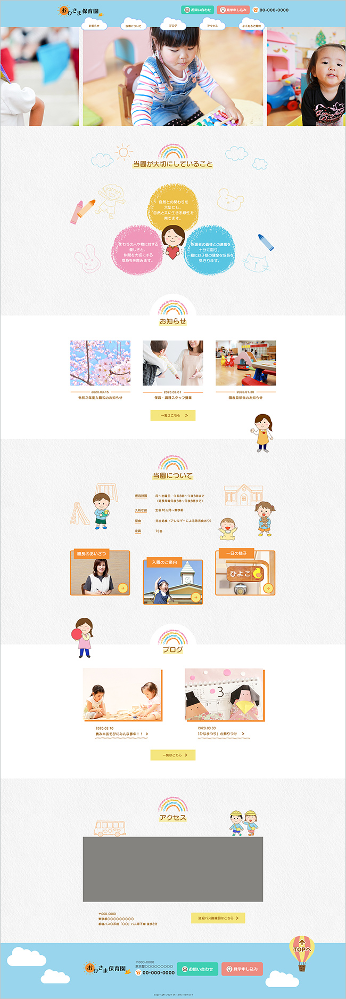

おひさま保育園
(架空サイトTOPページ）
概要
東京都足立区にある「おひさま保育園（架空）」のwebサイト制作。
足立区のwebサイトの保育施設一覧ページに保育園の情報は簡易的に載せていたが、webサイトはなかった。おひさま保育園は子供の保育に関してだけでなく、共働き夫婦の支援にも力を入れており、保護者と積極的なコミュニケーションを取るよう心掛けている。
目的
- 子供を保育園に預けたいと考えている人向けに、おひさま保育園の情報を一目で分かるようにするため
- 保育士や調理スタッフを希望している人向けに、園の様子などを伝えるため
ゴール
- 入園希望者が増える
- 保育士や調理スタッフの求職希望者が増える
ペルソナ

谷口 遥（32歳）
- 女性、会社員、既婚、都内在住
- 金融機関に勤務
- 現在妊娠8ヵ月であと一ヵ月で産休に入る予定
- パソコンやスマホでの情報収集が好き
- 結婚を機に足立区へ引っ越してきた
- 出産後は早めに仕事復帰する考えで、今から保育施設の情報を収集している
- 保育施設を探すポイントは、①家から近い②給食あり③施設が綺麗④先生や園の雰囲気の良さ
制作ポイント
- サイトを見たときに楽しい印象が伝わるよう、カラフルな配色を使用（コンテンツのテキスト付近は色よりも情報が伝わるように色数を限定している）
- 子供たちの写真を多く使用することで、園の賑やかで楽しい雰囲気が伝わるようにした
- 「お問い合わせ」「見学申し込み」ボタンはヘッダーとフッターに配置し、すぐにコンタクトを取れるような導線を意識した
- 「当園が大切にしていること」の部分は、余裕を持たせながら縦も横もたっぷりとスぺースを使用。他のコンテンツと雰囲気を変え、少しでも印象に残るようなレイアウトを意識した
- 「お知らせ」から下のコンテンツは、とにかく情報を分かりやすく届けることを意識し、コンテンツの並びはシンプルな配置にした
- イラストは全て自分で作成。情報よりも目立ちすぎないよう色のトーンを合わせ、大きさを調整。コンテンツの目線誘導の役割で配置場所を決めた

担当範囲
デザイン、コーディング
制作ツール
Photoshop、Dreamweaver、Xd（ワイヤーフレーム）
制作期間
2週間
